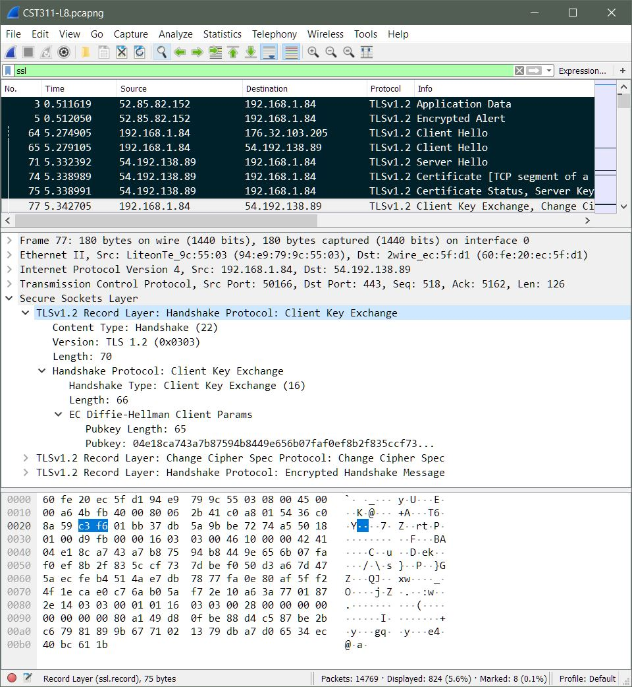

CST 311 : Intro to Computer Networks
Survey of Telecomm and Data Comm Technology Fundamentals, Local Area Network, Wide Area Network, Internet and internetworking protocols including TCP/IP, network security and performance, emerging industry trends such as voice over the network and high speed networking. Designed as a foundation for students who wish to pursue more advanced network studies including certificate programs. Includes hands-on networking labs that incorporate Cisco CCNA lab components.
Program Outcomes:

Gained knowledge of basic networking layers, protocols, security, and use of WireShark.